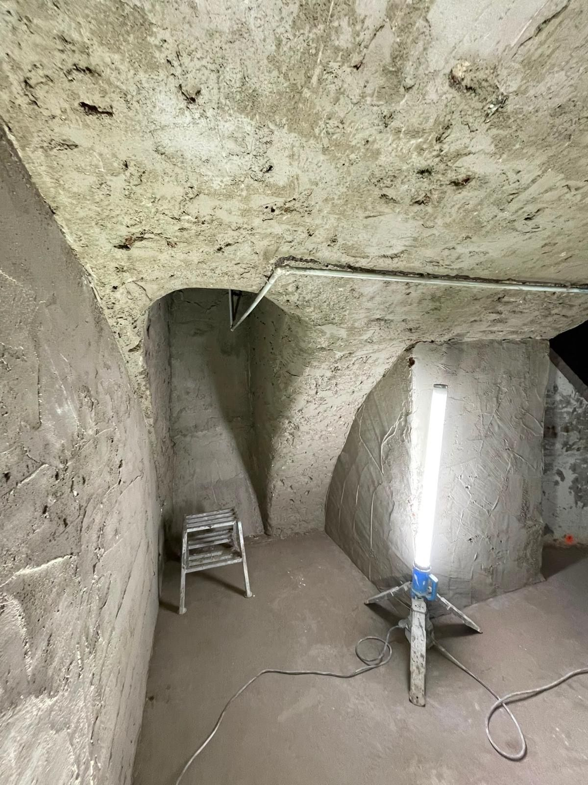

PROJECTEN
Het werk spreekt voor zich.
Van een gewelfde kelder tot een badkamer in warme betonlook. Een greep uit recent werk van Frank.
UITGELICHT PROJECT
Het gewelf, van ruw tot strak
Een gewelfd plafond vraagt om geduld en een vaste hand. Machinaal opgezet, daarna met de spaan gladgezet tot de boog vloeiend doorloopt. [AANVULLEN: plaats en toelichting.]

01Ruwe staat
02Opzetten

03Afspanen

04Resultaat
Meer werk
Klaar voor een wand of vloer die blijft verrassen?
Vraag een vrijblijvende opname aan. Frank komt langs en denkt met je mee.